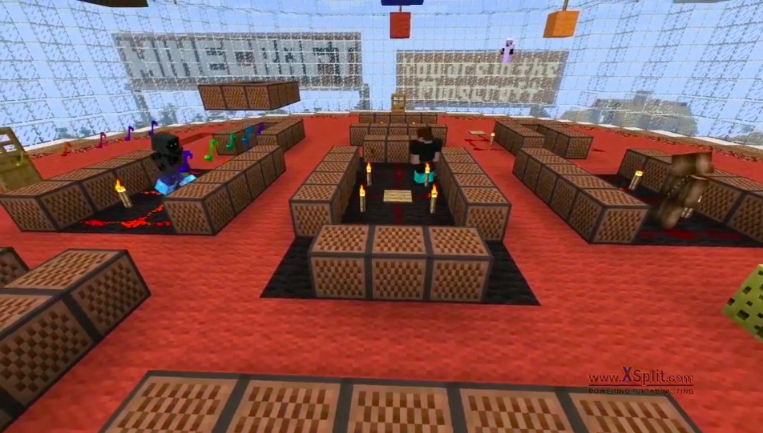
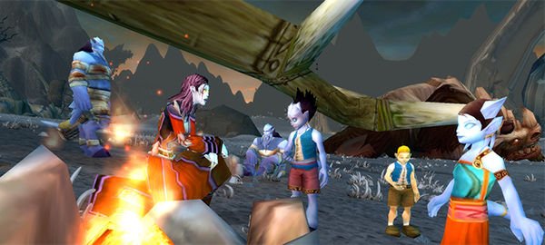
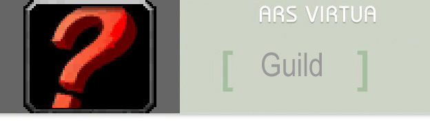
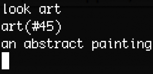
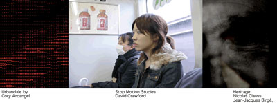
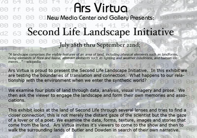

Projects
Project entry points and surviving documentation from the Ars Virtua repository.


V2V: Valley to Valley
A research and exhibition project linking Silicon Valley and the Ural Industrial Biennial.

AVAIR
The Ars Virtua Artist-in-Residence program for artists working in synthetic worlds.

Borders, Boundaries & Liminal Spaces
A conference and project archive around synthetic and terrestrial liminal spaces.
Program Announcement Body in Quotes Out of Body Game the System

The Third Faction and /hug
World of Warcraft projects, research, recordings, and gallery documentation.
What is Third Faction? /hug Fishing Gallery Recordings Gallery Models

Ars Virtua Guild
Guild projects and community activity reaching into the realm of Warcraft.

Not a Hero
A roleplaying experiment following Dave, a banal fantasy character inside World of Warcraft.

Looks Very Tidy
A Second Life vacuuming performance and 3D-printed object project by John and James.
{kind=link}

Tribute to Jean Baudrillard
A trans-instance memorial event held in World of Warcraft and telecast into Second Life.

look art
A text-environment project exploring MUDs, native art, and social immersion.
Upgrade! Second Life
A bi-monthly gathering of new media artists and curators in Second Life.

honesty is our policy
A Second Life exhibition and documentation archive around identity, trust, and networked space.

Second Life Landscape Initiative
Landscape data and Blender assets from synthetic-world research.
OpenSim Resources
Reference links for OpenSimulator, realXtend, grids, and OpenSim communication channels.
Early Exhibits Archive
Repository archive material for early Ars Virtua exhibits, programs, and project history.